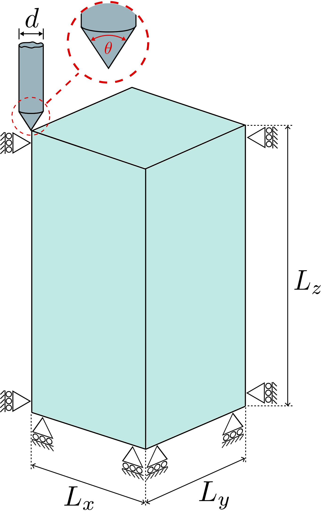
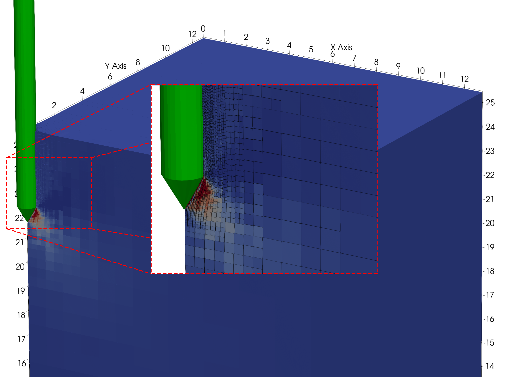
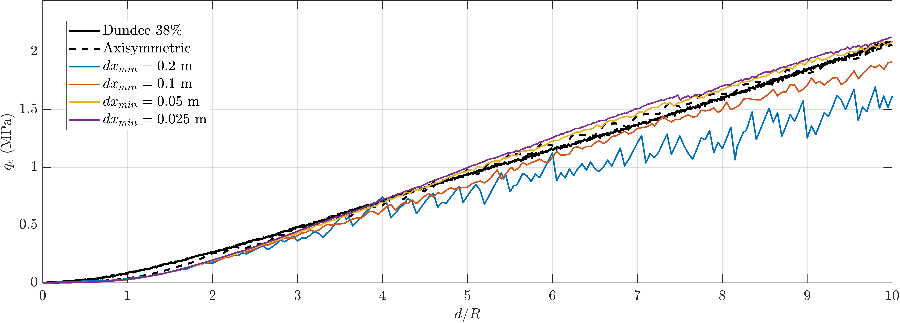

Tutorial 3: Vertical penetration (Cone Penetration Test)¶
Introduction¶
This tutorial walks through a Cone Penetration Test (CPT) simulation, a workhorse problem in offshore geotechnical engineering that is used to calibrate soil parameters against in-situ measurements.
A rigid cone is pushed quasi-statically \(4.5\) m into a bed of dry sand, and the cone-tip resistance can be compared against centrifuge data such as that of Davidson et al. 1 and Cerfontaine et al. 2. The problem builds on Tutorial 2 and adds four things: an elasto-plastic sand whose stiffness increases with depth, frictional contact, mesh refinement that follows the cone, and an analysis made of two stages.
This tutorial has four sections:
Problem description¶
You will define the soil, the cone, the two loading stages, the solver and the output in the input file. All the inputs to the simulation are defined using the input_data.json file format.
Only a quarter of the problem is modelled, using the two vertical planes of symmetry through the cone axis. The cone axis runs down the corner of the soil block at \(x = y = 0\), and the two faces that meet there carry roller conditions.

Figure reproduced from 3.
Soil block: \(10 \times 10\) m in plan and \(20\) m deep, starting with \(2 \times 2 \times 2\) material points in each element. The base element size is given as \(2.0\) m, but every element size must be a power-of-two multiple of the smallest one - \(0.025\) m at the cone - so the base size becomes \(0.025 \times 2^6 = 1.6\) m and the footprint is rounded up to seven elements, \(11.2 \times 11.2\) m (see how element sizes set the mesh).
Boundary conditions: Rollers on the four vertical faces - on \(x = 0\) and \(y = 0\) these are the symmetry conditions - and a fixed base. The soil surface is free.
Material: Willam-Warnke elasto-plastic sand at a relative density of \(D_r = 38\%\), with the parameters from the Brinkgreve correlations 4:
| Property | Correlation | Value at \(D_r = 38\%\) | Input key |
|---|---|---|---|
| Reference Young's modulus | \(E^{ref} = 60\,000\; D_r/100\) kPa | \(22.8\) MPa | "E": 2.28e7 |
| Friction angle | \(\phi = 28 + 12.5\; D_r/100\) | \(32.75^\circ\) | "friction angle": 32.75 |
| Dilation angle | \(\psi = -2 + 12.5\; D_r/100\) | \(2.75^\circ\) | "dilation angle": 2.75 |
| Dry unit weight | \(\gamma = 15 + 4\; D_r/100\) kN/m\(^3\) | \(16.52\) kN/m\(^3\) | "density": 1652.0 |
| Stiffness exponent | \(m = 0.7 - D_r/320\) | \(0.58125\) | "exponent": 0.58125 |
| Earth pressure at rest | \(K_0 = 1 - \sin\phi\) | \(0.459\) | "reference stress" (below) |
| Poisson's ratio | - | \(0.25\) | "nu": 0.25 |
| Cohesion | - | \(0.3\) kPa | "cohesion": 300.0 |
The density is entered as the unit weight divided by \(10\) m/s\(^2\).
The Young's modulus increases with depth. Brinkgreve's stiffness law is written in terms of the horizontal stress \(K_0 \sigma_v\) and a reference pressure \(p^{ref} = 100\) kPa, whereas S3-MPM's stress-dependent stiffness uses the vertical stress \(\sigma_v\). The two are the same when the reference stress is \(p^{ref}/K_0\):
\(\sigma_v\) is calculated from the weight of the soil above each material point's initial position, so each point's stiffness is set once and does not change during the analysis.
Cone: CPT.stl, a cylinder of radius \(r = 0.4\) m with a \(60^\circ\) conical tip, \(10.69\) m long in total and drawn with its tip at the origin. Coulomb friction with \(\mu = 0.33\) acts between the cone and the sand, and the contact penalty is set automatically, as described in Tutorial 2.
Loading: Two static stages:
- Stage 1 - initial stresses: the cone is switched off and gravity is ramped up over 5 load steps.
- Stage 2 - penetration: the cone is placed on the soil surface and pushed down \(10\) mm per load step for 450 load steps (\(4.5\) m), with the mesh refined to \(0.025\) m wherever the cone surface is.
Solver: Newton-Raphson, quasi-static, for both stages.
Input setup¶
The input file is a single JSON object - a human-readable, editable text file. The complete file for this problem can be found here, and every key is described on the input_data.json file format page.
input_data.jsonMachine and domain¶
"GPU": "on" runs the analysis on an NVIDIA GPU. This is recommended here, because refining the cone surface to \(0.025\) m creates a large number of material points; set it to "off" to run on the CPU.
The domain "size" is only a lower bound. The background grid is enlarged automatically to hold the soil block and the empty space above it, which here makes it a cube of side \(51.2\) m. Gravity acts in \(-z\).
Material points¶
A single \(20\) m layer of Willam-Warnke sand over a \(10 \times 10\) m footprint, with the properties from the Problem description. The "E overburden" block makes the Young's modulus increase with depth.
"extra capacity": 1.2 reserves 20% more storage than the initial material points need, because the refinement around the cone splits material points into smaller ones.
"material points": {
"extra capacity": 1.2,
"element size": 2.0,
"number of material points per element 1": 2,
"material size": { "min": [0.0, 0.0], "max": [10.0, 10.0] },
"layers": [
{
"thickness": 20.0,
"material": { "type": "willam warnke",
"E": 2.28e7, "nu": 0.25,
"friction angle": 32.75, "dilation angle": 2.75, "cohesion": 300.0,
"density": 1652.0,
"E overburden": { "reference stress": 2.1785e5, "exponent": 0.58125 } }
}
]
}
Rigid body¶
The cone is one system with a single point, placed at its tip - the origin of CPT.stl. All positions in the file are global, so the point and the STL geometry are given in the same frame.
"offset" shifts the whole cone \(10\) mm in \(-x\) and \(-y\), so its axis sits just outside the corner of the soil block. All six degrees of freedom are "fixed", so the cone does not move and its mass and inertia play no part; stage 2 replaces the vertical condition to push the cone down.
CPT_mesh.txt stores the tetrahedral mesh of the cone. If it is missing, it is generated from the STL on the first run.
"rigid bodies": [
{
"offset": [-0.01, -0.01, 0.0],
"points": [
{ "position": [0.0, 0.0, 0.0], "mass": 39989.6, "rotational inertia": [1626001.9, 1626001.9, 3199.2],
"boundary conditions": ["fixed", "fixed", "fixed", "fixed", "fixed", "fixed"] }
],
"stl files": [
{ "name": "cpt", "stl": "CPT.stl",
"mesh cache": "CPT_mesh.txt", "point": 1 }
]
}
]
Contact¶
Coulomb friction with \(\mu = 0.33\) between the cone and the sand.
Stage 1: initial stresses¶
The first entry in "analysis" is a static stage with the cone switched off ("rigid bodies": "off"). Gravity is ramped from zero to its full value over 5 load steps, setting up the initial stresses in the sand. "adaptivity": {"type": "uniform"} meshes the whole grid at the \(1.6\) m base size.
The four vertical faces are rollers and the base is fixed. The top face is fixed too, but it lies at twice the soil depth, in the empty space above the soil, so the soil surface stays free.
Stage 2: cone penetration¶
The second stage switches the cone on. "rigid body surface placement": "on" moves it vertically at the start of the stage so that its tip rests on the soil surface, and "load": "full" keeps gravity at its full value throughout.
"rigid body boundary conditions" replaces the conditions of point 1 of system 1 - the cone - for this stage only, prescribing a vertical displacement of \(-0.01\) m per load step. Over the 450 load steps the cone penetrates \(4.5\) m.
"rigid body surface" adaptivity refines the elements the cone surface passes through to \(0.025\) m at every step, so the fine mesh travels down with the cone. For a quicker, coarser first run use "element size": 0.1.
{
"type": "static",
"load steps": 450,
"load": "full",
"rigid bodies": "on",
"rigid body surface placement": "on",
"adaptivity": {
"type": "rigid body surface",
"element size": 0.025
},
"rigid body boundary conditions": [
{ "system": 1, "point": 1, "boundary conditions": ["fixed", "fixed", { "prescribed": -0.01 }, "fixed", "fixed", "fixed"] }
],
"boundary conditions": { "min": ["roller", "roller", "fixed"], "max": ["roller", "roller", "fixed"] }
}
Solver¶
Each load step is solved by Newton-Raphson iterations to a tolerance of \(10^{-6}\); a step that has not converged after 20 iterations is retried with half the increment.
"ghost factor" and "ghost factor mass" set the strength of the ghost stabilisation of poorly filled elements at the edges of the soil, and "poor factor": 0.25 treats elements less than a quarter full as poorly filled.
Output¶
VTK files for ParaView are written to vtk_CPT_dr38 every \(0.5\%\) of each stage's load steps - every 2 load steps during penetration - and CSV files to csv_CPT_dr38 every \(0.25\%\), which is every load step here.
The rigid-body CSV output includes the reaction force on the cone, from which the tip resistance is calculated in Cone resistance.
"output": {
"vtk": "on",
"vtk directory": "vtk_CPT_dr38",
"vtk percent": 0.5,
"vtk material point fields": ["displacement", "velocity", "stress", "strain", "volume"],
"vtk rigid body fields": ["position", "velocity", "reaction force"],
"csv": "on",
"csv directory": "csv_CPT_dr38",
"csv percent": 0.25,
"csv material point fields": ["initial position", "position", "stress"],
"csv rigid body fields": ["position", "velocity", "reaction force", "reaction moment"]
}
Deploying and running the problem¶
S3-MPM is written in the Julia programming language. See the installation guide for installing Julia and S3-MPM, and Tutorial 1 for a first, small run.
terminalSetting up the run folder¶
Create a folder for the run containing:
input_data.json, copied from the complete input file;CPT.stlandCPT_mesh.txt, from the top level of the S3-MPM repository.
The STL and mesh-cache paths in the input file are relative to the input file, and the output folders vtk_CPT_dr38 and csv_CPT_dr38 are created in the folder Julia is started from.
Running the problem¶
Start Julia in the run folder with the S3-MPM project active (--project) and every CPU thread available (-t auto), then load S3-MPM and run the input file.
This is a large analysis: with \(0.025\) m elements around the cone it is intended for a GPU or an HPC node. On a workstation without a GPU, set "GPU": "off" and use "element size": 0.1 in stage 2.
The progress line shows stage 1/2 while the initial stresses are set up and stage 2/2 during penetration. Its fields are explained in Tutorial 1.
Viewing the results¶
Visualising the output in ParaView¶
The output can be viewed while the analysis runs. The walkthrough below uses the same ParaView controls as Tutorial 1.
1. Open the soil and the cone. File → Open, go to vtk_CPT_dr38, hold Ctrl and select the mps_1_..vtu (soil) and surface_..vtu (cone) series, click OK and then Apply.
Placeholder: ParaView screenshot
img/tutorial_3/paraview_1.png - the quarter soil block and the cone after Apply.
2. Mirror the quarter model. Select mps_1_..vtu and apply Filters → Alphabetical → Reflect with Plane X and Center 0. Select the new Reflect1 and apply a second Reflect with Plane Y and Center 0, giving the full soil block around the cone.
Placeholder: ParaView screenshot
img/tutorial_3/paraview_2.png - the full soil block after the two reflections.
3. Cut through the cone axis. With Reflect2 selected, apply Filters → Common → Clip with Normal (0, 1, 0) and Origin (0, 0, 0), and untick Show Plane. The clip opens a vertical section through the soil beside the cone.
Placeholder: ParaView screenshot
img/tutorial_3/paraview_3.png - the clipped soil block with the cone visible in the section.
4. Colour by displacement at the final step. Set the clip's Coloring to displacement → Magnitude, click Go to Last (▶|) and then Rescale to Data Range. The largest displacements are in the sand immediately beneath and beside the cone tip.
Placeholder: ParaView screenshot
img/tutorial_3/paraview_4.png - displacement magnitude on the section at the end of penetration.
5. Look at the stresses and the contact force. Colour the clip by stress → ZZ for the vertical stress. Then select surface_..vtu and colour it by contact force → Magnitude to see which parts of the cone carry the load.
Placeholder: ParaView screenshot
img/tutorial_3/paraview_5.png - vertical stress in the soil and contact force on the cone surface.
Cone resistance¶
csv_CPT_dr38/rigid_body.csv has one row per output step for the cone's point, body1. body1_position_z is the height of the cone tip and body1_reaction force_z is the vertical force needed to push the cone. Because only a quarter of the soil is modelled, the tip resistance is approximately
and the penetration depth is the height of the soil surface, \(20\) m, minus body1_position_z. The rows from stage 1 come before the cone is placed on the soil, with zero force, and should be skipped. In a static stage the time column is the load fraction, which runs from 0 to 1 over the \(4.5\) m of penetration.
Placeholder: results plot
img/tutorial_3/cone_resistance.png - \(q_c\) against penetration depth from rigid_body.csv, compared with the centrifuge data.
Published results¶
The deformed mesh and GIMP displacement field at \(1.2\) m penetration from 3 is shown below: the displacement magnitude rises from \(0\) m (blue) in the far field to roughly \(0.5\) m (red) immediately under the cone tip.

Figure reproduced from 3.
In the same study the cone-tip resistance \(q_c\), normalised by the cone radius \(r\), was compared against the centrifuge measurements of Davidson et al. 1 and Cerfontaine et al. 2, with convergence checked by halving the smallest element size.

Figure reproduced from 3.
-
C. Davidson, M. Brown, B. Cerfontaine, J. Knappett, A. Brennan, T. Al-Baghdadi, C.E. Augarde, W.M. Coombs, L. Wang, A. Blake, D. Richards, and J.D. Ball. Physical modelling to demonstrate the feasibility of screw piles for offshore jacket supported wind energy structures. Géotechnique, 72(2):108–126, 2022. ↩↩
-
B. Cerfontaine, J. Knappett, M.J. Brown, C. Davidson, and Y. Sharif. Optimised design of screw anchors in tension in sand for renewable energy applications. Ocean Engineering, 217:108010, 2020. ↩↩
-
Robert E. Bird, William M. Coombs, Charles E. Augarde, Giuliano Pretti, and Ted J. O'Hare. An implicit octree-based adaptive material point method. 2026. URL: https://arxiv.org/abs/2606.09275, arXiv:2606.09275. ↩↩↩↩
-
R.B.J. Brinkgreve, E. Engin, and H.K. Engin. Validation of empirical formulas to derive model parameters for sands. In Numerical Methods in Geotechnical Engineering, pages 137–142. CRC Press, 2010. ↩